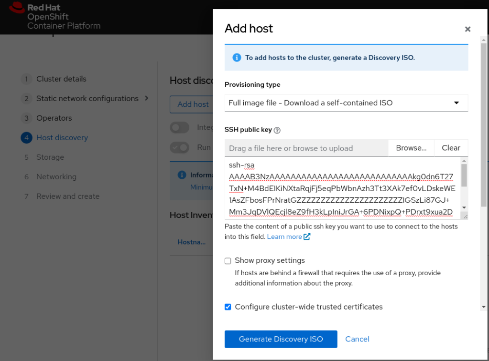

单节点 OKD4(SNO) - Assisted Installer
Single Node Openshift (SNO), 顾名思义就是只有一个节点的 Openshift. 让用户可以在资源紧缺的边缘设备上运行 Openshift 工作负载. 对于动辄需要几十上百G内存的普通集群, SNO 也非常适合本地开发/测试环境. 这里将记录如何使用 Assisted Installer 方式来部署单节点 OKD (SNO) 4.12
一些基本信息
Openshift 从 4.9 开始支持 SNO, 然而 OKD 官方文档上的 SNO 安装部分目前已经被删除 (4.13 是目前最新版本). 因此这里将主要参考 OCP 文档的相关部分以及网络上的一些其他资源. OKD 版本为 4.12.0-0.okd-2023-04-01-051724
准备基础设施
本文将在 vSphere 8 环境安装 OKD 4.12 SNO.
准备好必要的 DNS 条目. 这里将使用静态 IP 地址, 无需 DHCP 1
2
3
4hdc-srv-1.int.vopsdev.com A 192.168.11.71
api.cls-sno-1.vopsdev.com CNAME hdc-srv-1.int.vopsdev.com
api-int.cls-sno-1.vopsdev.com CNAME hdc-srv-1.int.vopsdev.com
*.apps.cls-sno-1.vopsdev.com CNAME hdc-srv-1.int.vopsdev.com
准备 assisted installer
我们将在一台控制机上运行 assisted service. 请确保将来的 SNO 节点可以访问到控制机来返回/上报节点状态.
将 assisted-service 代码库拉下来后, 修改 deploy/podman/okd-configmap.yml 文件 1
2
3
4
5
6
7
8
9
10
11
12apiVersion: v1
kind: ConfigMap
metadata:
name: config
data:
ASSISTED_SERVICE_HOST: 192.168.255.247:8090
...
IMAGE_SERVICE_BASE_URL: http://192.168.255.247:8888
...
OS_IMAGES: '[{"openshift_version":"4.12","cpu_architecture":"x86_64","url":"https://builds.coreos.fedoraproject.org/prod/streams/stable/builds/37.20221127.3.0/x86_64/fedora-coreos-37.20221127.3.0-live.x86_64.iso","version":"37.20221127.3.0"}]'
...
RELEASE_IMAGES: '[{"openshift_version":"4.12","cpu_architecture":"x86_64","cpu_architectures":["x86_64"],"url":"quay.io/openshift/okd:4.12.0-0.okd-2023-04-01-051724","version":"4.12.0-0.okd-2023-04-01-051724","default":true}]'
ASSISTED_SERVICE_HOST 和 IMAGE_SERVICE_BASE_URL 原来用的 127.0.0.1 的地址, 替换为控制机的地址. OS_IMAGES 替换为目标 OKD 版本对应的 fedora-coreos ISO 地址. RELEASE_IMAGES 替换为目标 OKD 版本
1 | # 获取指定 OKD 版本的对应 fedora-coreos ISO 地址 |
修改 Makefile 文件中 healthcheck 的地址, 原本是 127.0.0.1, 改为控制机的地址 1
2
3
4
5
6...
deploy-onprem:
podman play kube --configmap ${PODMAN_CONFIGMAP} deploy/podman/pod.yml
./hack/retry.sh 90 2 "curl -f http://192.168.255.247:8090/ready"
./hack/retry.sh 60 10 "curl -f http://192.168.255.247:8888/health"
...
使用 assisted installer 部署单节点 OKD 4.12
先在 vSphere 上创建一个虚拟机, 最小规格为 8 vCPU/16G RAM/120G Disk, 记录其 MAC 地址, 后面会用到.
使用 make deploy-onprem OKD=true 命令启动 assisted-service. 等待 healthcheck 通过. 通过浏览器打开控制机的8080端口地址
在创建新集群页面点击 Next 进入 Cluster details 页面. 输入集群信息 cluster name, base domain, 选择 openshift 版本/架构, 勾选 SNO 模式, 选择静态网络配置 Static IP, bridge, and bonds.
网络设置页面填写 DNS/Subnet/Default gateway
继续填写节点的 MAC 地址和 IP 地址
Operators 页面不选择安装额外的 operators, 直接 Next 到 Host discovery 页面. 点击 Add host 来生成 discovery ISO. 根据自己的环境输入 SSH public key, trusted CA bundle 
点击 Download Discovery ISO 下载下来. 到 vSphere 上为虚拟机挂载该 ISO, 设置启动时连接, 然后启动该虚拟机. 等待一段时间后, 该节点会出现在 Host Inventory 中
Storage 页面和 Networking 页面按需调整, 否则直接 Next. 到 Review and create 页面, 确认信息无误后 Install cluster 开始安装.
然后等待安装结束, 大约需要半小时.
至此单节点 OKD 安装完成, 可以根据提示进行访问.
清理 assisted-service: make clear-all